Section 1
Fast, adaptive, and lossless
We compare Evolving Infra with Dynamo on nine nodes of 4 GB300 GPUs each. Both systems start from 6 prefill and 3 decode nodes.
Serving 126 coding agents concurrently
Dynamo is on the left and Evolving Infra on the right. Both serve the same Claude Code workload with GLM-5.2 on the same 36 GB300 GPUs, and the video shows 60 minutes at 60× speed. The numbers above come from the two runs in the video. Revenue and user cost use the GLM-5.2 list price: $1.40 per 1M input tokens ($0.26 if cached) and $4.40 per 1M output tokens. User cost per agent step is revenue divided by completed LLM calls.
Lower mean latency on every agent workload
Claude Code traces with 90 concurrent agents, GLM-5.2.
Across all three workloads, vs Dynamo
- 1.10–2.73× the throughput.
- Mean end-to-end latency 3.80–4.12× lower on Claude Code, 2.34–2.69× on OSWorld, and 1.15–1.23× on Putnam.
- P95 time to first token 3.25–13.92× lower on Claude Code and OSWorld.
- 81–95% less lost KV reuse.
- On the decode-heavy Putnam workload, the planner keeps only one or two prefill nodes. This raises P95 time to first token at 224 and 288 agents, and lowers the mean end-to-end latency.
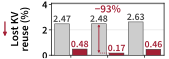
Mean end-to-end latency (s) P95 time to first token (s)
P95 time to first token (s)
 Mean end-to-end latency (s)
Mean end-to-end latency (s) P95 time to first token (s)
P95 time to first token (s)
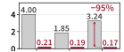
Mean end-to-end latency (s) P95 time to first token (s)
P95 time to first token (s)
Follows a shifting agent mix
The cluster serves 288 Putnam math agents for one hour, then 144 Putnam and 72 OSWorld agents, then 144 OSWorld computer-use agents. Demand moves toward prefill. The model is Kimi K2.6.
Evolving Infra tracks the best split of each 10-minute window and settles at 8P1D in the OSWorld phase. The Dynamo planner keeps fewer prefill nodes than the best split for most of the run. Evolving Infra reaches 2.1× the throughput of Dynamo and 28% more than the best static split.

Phase switches cost almost nothing
- A phase switch takes 6.2 s on average, over 100× shorter than a Dynamo relaunch, and the switching node keeps its KV.
- Evolving Infra switches 2.0 times per run. The Dynamo planner switches 3.6 times and is off the best static split for 41–100% of the measured hour.
- No offline profiling. Profiling the three-hour Claude Code trace on 256 GPUs would take 10,752 GPU-hours, even with a binary search, and must be repeated for each agent workload.
- Under open-loop arrivals, the planner gives prefill more nodes as agents arrive faster and sustains twice the arrival rate of the best static split.
Section 2
Architecture overview
Evolving Infra separates where computation runs from where KV lives. One router sends prefill and decode requests to symmetric engines. All nodes pool their host memory into one KV pool, and a cluster-wide directory counts the agent branches that still reference each KV block.

Symmetric engines
Every node runs one engine that serves both prefill and decode in a single scheduling loop. To switch a node, the router changes the type of request it sends there. Nothing restarts.
Shared host-memory KV pool
Each node writes its KV through to host memory, and the host memory of all nodes forms one pool. A prefill node pulls reusable KV from a peer over RDMA while the request waits in its queue.
Agent-aware KV directory
The router keeps a cluster-wide prefix tree of KV placement. For each KV block, it counts the active agent branches that reference it, so the cluster knows which KV no agent will reuse.
Section 3
Agentic serving challenges
Agents solve tasks through repeated model calls and tool calls. Their harnesses fork contexts, spawn sub-agents, and compact histories. Agent traffic therefore varies across agents, over time, and within each agent.
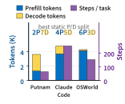
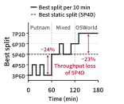
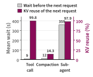
Three problems in today's prefill–decode serving
Measured on the same nine nodes with GLM-5.2 and 90 concurrent Claude Code agents. Dynamo runs its planner with the SGLang Model Gateway; Arrow is reimplemented on SGLang. Both planners start from 6P3D, and each node runs HiCache with LRU eviction.
Engines fix their phase at launch and index cached KV in local state. Every phase switch therefore costs time, KV reuse, or both.
The Dynamo planner relaunches the worker of a node at every switch. A switch takes 681 s on average, and the node serves no requests in that time. Arrow switches nodes in place, but the KV of a switched node becomes unreachable for prefill. Over 34 switches, Arrow misses 55.5% of the cache hits it could have had.
| Planner | Time per switch | Switches | Lost KV reuse |
|---|---|---|---|
| Dynamo planner | 681 s | 4 | 5.1% |
| Arrow | ≈0 s | 34 | 55.5% |
| Evolving Infra | 0.7 s | 1 | 0.3% |
Lost KV reuse is 1 − h/h*, against an unlimited KV cache shared by all nodes with no phase switch.
Online planners size the split from coarse signals. Arrow predicts prefill time from the full input length, so it counts cached prefixes as work. It also reacts to short bursts, such as several sub-agents that start together. Arrow drifts from 6P3D to 8P1D and switches 34 times.
The Dynamo planner follows queue depth and KV utilization. Long agent contexts keep decode KV utilization high, and it drifts to 2P7D. The Dynamo planner and Arrow deliver 49% and 65% less throughput than the best static split, 4P5D.
Final split after one hour (dark: prefill, light: decode) and throughput. Evolving Infra reaches over twice the throughput of either planner.
Routers misjudge agent KV reuse in both directions. The cache-aware and sticky policies of the SGLang Model Gateway keep an agent and its forked branches on the few prefill nodes that hold their prefixes, and P95 time to first token reaches 27 s and 34 s. The load-aware Dynamo KV router sends requests to nodes without their prefixes, which recompute them: 65 s. A shared memory pool avoids the recomputation, but each request must fetch its prefix before prefill starts: 95 s.
Eviction misjudges reuse too. HiCache evicts the least recently used KV. It keeps histories that compaction replaced and evicts the KV of branches that wait for tools. On Claude Code, these evictions cause 34–46% of the KV reuse that Dynamo loses.
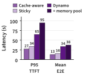
Section 4
Our method and design
Two limitations cause these problems. Compute allocation and KV cache management are coupled, so a phase switch strands or discards KV. And the planner, router, and memory pool act on coarse signals, such as queue depth, input length, and access recency, that do not show what agents do. Evolving Infra removes the coupling, then adapts both sides to agents.
4.1Decoupled compute and KV cache
The infrastructure lets a node change phase without a relaunch and keeps all KV readable by every node in either phase.
SGLang runs prefill and decode in separate scheduling loops and fixes each engine's phase at launch. Our engine extends SGLang with one scheduling loop that serves both phases and with a GPU-to-GPU KV transfer protocol between nodes. Every node is ambidextrous.
A single router sends prefill requests to one set of nodes and decode requests to the rest. To switch a node, the router only changes the type of request that it routes there. Before the switch, it moves the node's queued requests to other nodes of the same phase. The engine keeps running and the node's KV stays in the pool, so a switch needs no relaunch and loses no KV reuse.
Following HiCache, each node caches KV in GPU memory (L1) and writes it through to host memory (L2) in both phases. The L2 of all nodes forms one shared pool. A prefill node finds reusable KV through the directory and pulls it from the L2 of a peer over RDMA. The pool needs no extra copy, and deduplication across the GPUs of a node raises its effective capacity.
A fetch from a peer would delay the prefill of its request. Evolving Infra therefore starts the fetch while the request waits in the queue: the node pulls the KV into GPU memory and broadcasts it to all GPUs of the node before prefill begins. Decode nodes only write to the pool. They receive each request's KV from the prefill node over the faster GPU-to-GPU path, and the KV they generate stays in their L2 for the agent's next prefill.
Following the Dynamo KV indexer, the router keeps a cluster-wide prefix tree that records where KV sits in the GPU and host memory of each node. For each KV block, it also counts the active agent branches that reference it.
The harness tags each request with the ID of its branch and reports when a branch finishes. The router keeps a version per branch and increments it when compaction rewrites the context. Counts follow context management: a consecutive request counts only its new blocks, a compaction releases the blocks that the new context drops, and a finished branch releases all its counts.
Counts also follow KV transfers. A move between two nodes of the same phase moves the counts, since the branch reuses only the target copy. A transfer between phases keeps counts on both nodes, since the next step needs both copies.
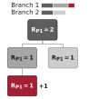
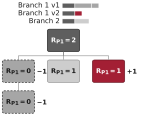
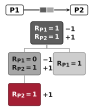
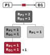
4.2Agent-adaptive compute allocation
The planner sizes the prefill–decode split from models of the work that requests need after KV reuse. It learns the models online and needs no offline profiling.
Each request is described by its uncached input tokens tuc, cached input tokens tc, output tokens tout, and tokens accepted per decode step tacc. The router reads tc from the longest cached prefix in the directory. Separating cached from uncached tokens keeps the prediction accurate when agents reuse most of their context.
Prefill is compute-bound. Under chunked prefill, an iteration on node n costs a fixed overhead plus terms for new tokens, query–key pairs A, and tokens restored from host memory:
T_P,n = c0 + c1·Σt_uc + c2·ΣA + c3·Σt_rstA = t_uc·t_c + t_uc·(t_uc+1)/2Decode is memory-bound. With B requests sharing each iteration, a request occupies a decode node for
T_D,n(w) = T_iter(B) · t_out / (B · t_acc)Evolving Infra fits the coefficients of each node online during warmup with nonnegative least squares, then freezes them. On GB300 nodes the models predict iteration time with a mean error below 7%.
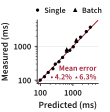
Every request passes through both phases, so the slower phase sets the cluster throughput. At the end of each 10-minute planning window, the planner evaluates every split with the average work per request, w̄, and the average number of requests in decode, q̄:
Θ = min(Σ μ_P,n over prefill nodes, Σ μ_D,n over decode nodes)Unlike queue depth, the average work per request describes the agent workload itself and barely moves during a short burst of sub-agents. Because each switch has a cost, the planner switches only when a candidate split is better with statistical confidence. It splits the window into m slices and computes the gain of the candidate on each slice:
g_i = Θ(candidate) − Θ(current) on slice iIt switches only if the mean gain exceeds twice its standard error:
mean gain > 2 · std / sqrt(m)If several candidates qualify, it picks the one with the largest mean gain and applies it through an in-place phase switch.
4.3Agent-adaptive KV cache management
With the directory counts and fast KV transfers, Evolving Infra evicts the KV that no agent needs and routes for load instead of cache location.
A block keeps a positive count only while an active branch may still reuse it on that node. A block with count zero, such as a history that compaction replaced or the source copy left by a same-phase transfer, is KV that no active branch will reuse. Each node evicts the blocks in its host memory in ascending order of
(R_b > 0, last access time T_b)where Rb is the count of block b on the node and Tb its last access time. Zero-count blocks go first, in LRU order. Blocks with positive counts go only when no zero-count block remains. Replaced histories therefore leave before the KV of branches that wait for tools.
With this eviction, Evolving Infra keeps nearly all the KV that agents still need. Under Dynamo, the fraction of prompt tokens prefilled without cached KV is up to 2.99× that of Evolving Infra.
Asynchronous fetches make moving KV fast, so the router no longer has to send a request to the few nodes that hold its prefix. It sends each prefill request to the node with the shortest predicted time to first token:
T_n(w) = remaining batch time + queued work + own prefill timeHere Tremn is the remaining time of the node's running batch and Qn its queue. The prediction also charges the part of a fetch that outlasts the wait and the duplicate copy that the fetch creates. The chosen node fetches the request's KV from the shared pool while the request waits.
This choice weighs each node's queue against its cached KV and keeps popular prefixes from overloading a few nodes. On Claude Code, the most loaded prefill node queues requests 1.75–1.85× as long as the average node, against 2.29–2.61× under cache-aware routing.
Citation
Cite Evolving Infra
The paper is being prepared for arXiv. The BibTeX entry will appear here when the arXiv ID is assigned.
Hao Kang, Weili Xu, Ziyang Li, Zheng Du, Hanchen Li, Tian Xia, Song Bian, Tushar Krishna, Huizi Mao, Ion Stoica, Song Han.